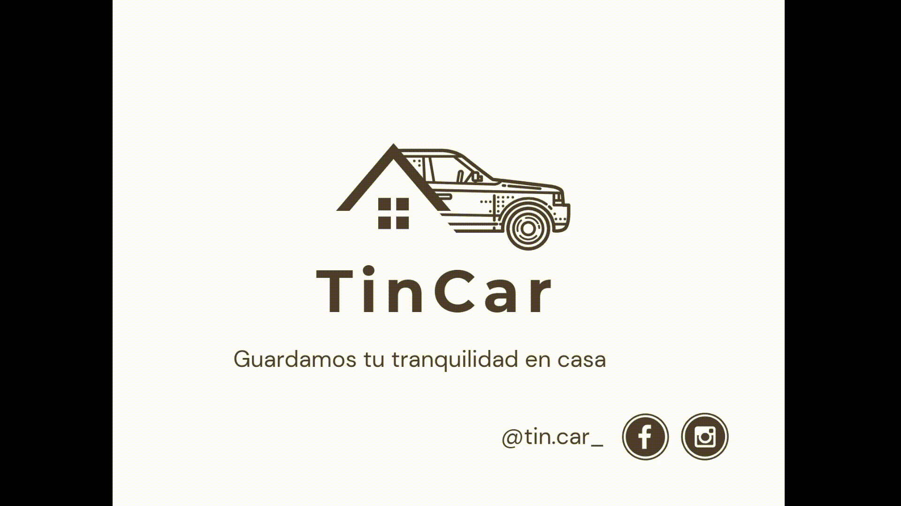
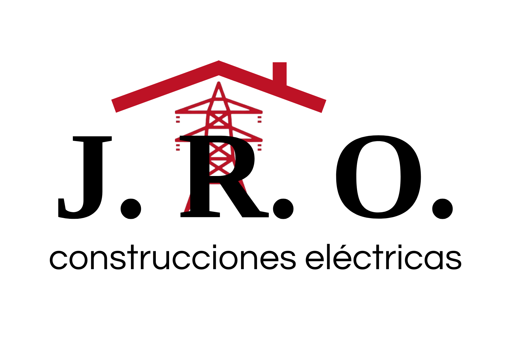
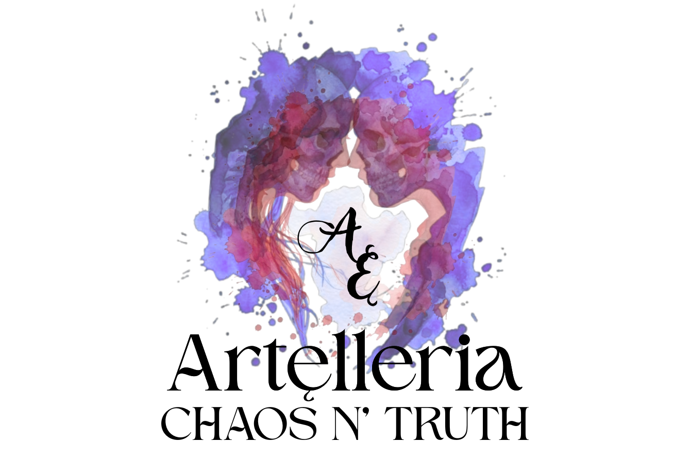

Logos...

TinCar es un proyecto enfocado en la optimización del uso de vehículos
privados mediante un modelo de arrendamiento inteligente. La identidad visual se inspira
en la unión entre hogar y movilidad, representada a través de la fusión de una casa y un
automóvil en un solo símbolo. Este concepto comunica la idea central del servicio:
vehículos disponibles de manera accesible, cercana y confiable, como si estuvieran
“en casa”. El uso de líneas limpias y un estilo minimalista refuerza la modernidad del
proyecto, mientras que el color dorado transmite valor, confianza y calidad en la
experiencia del usuario.

J R O Construcciones Eléctricas es una empresa dedicada a la instalación y mantenimiento
de sistemas eléctricos, abarcando proyectos desde lo residencial hasta lo industrial,
con enfoque en seguridad y eficiencia.
El logo se inspira en la unión entre construcción y energía:
el techo representa la infraestructura y la torre eléctrica
el trabajo técnico en distribución de energía. El color rojo transmite fuerza y potencia,
mientras que el negro aporta solidez y profesionalismo.

Artelleria es un proyecto creativo enfocado en la exhibición y difusión de obras artísticas,
donde se busca expresar la dualidad entre el caos y la verdad como parte esencial del proceso creativo.
El diseño del logo se inspira en esta idea, representando dos figuras enfrentadas que reflejan la conexión
entre emociones, identidad y arte, utilizando manchas de acuarela en tonos intensos para transmitir libertad,
contraste y expresión orgánica. La tipografía elegante equilibra el concepto visual, aportando identidad y
reforzando el carácter artístico y conceptual de la marca.